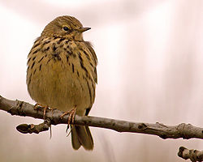
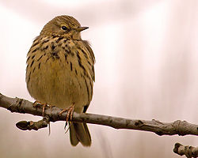

| Meadow Pipit | |
|---|---|
|  | |
| Conservation status | |
| Binomial name | |
| Anthus pratensis (Linnaeus, 1758) |
| Meadow Pipit | |
|---|---|
|  | |
| Conservation status | |
| Binomial name | |
| Anthus pratensis (Linnaeus, 1758) |
The Meadow Pipit Anthus pratensis, is a small passerine bird which breeds in much of the northern half of Europe and also northwestern Asia, from southeastern Greenland and Iceland east to just east of the Ural Mountains in Russia, and south to central France and Romania; there is also an isolated population in the Caucasus Mountains. It is migratory over most of its range, wintering in southern Europe, north Africa and southwestern Asia, but is resident in Ireland, Great Britain, and neighbouring areas of western Europe. However, even here, many birds move to the coast or lowlands in winter.[2][3]
This is a widespread and often abundant small pipit, 14.5–15 cm long and 15–22 g weight. It is an undistinguished looking species on the ground, mainly brown above and buff below, with darker streaking on most of its plumage; the tail is brown, with narrow white side edges. It has a thin bill and pale pinkish-yellow legs; the hind claw is notably long, longer than the rest of the hind toe. The call is a weak tsi-tsi. The simple repetitive song is given in a short song flight.[2][3] Birds breeding in Ireland and western Scotland are slightly darker coloured than those in other areas, and are often distinguished as the subspecies Anthus pratensis whistleri, though it intergrades clinally with nominate Anthus pratensis pratensis found in the rest of the species' range.[2][3]
It is primarily a species of open habitats, either uncultivated or low-intensity agriculture, such as pasture, bogs, and moorland, but also occurs in low numbers in arable croplands. In winter, it also uses saltmarshes and sometimes open woodlands. It is a fairly terrestrial pipit, always feeding on the ground, but will use elevated perches such as shrubs, fence lines or electricity wires as vantage points to watch for predators.[2][3][4]
It is similar to the Red-throated Pipit Anthus cervinus, which is more heavily streaked and (in summer only) has an orange-red throat, and to the Tree Pipit Anthus trivialis, which is slightly larger, less heavily streaked, and has stronger facial markings and a shorter hind claw. The song of the Meadow Pipit accelerates towards the end while that of the Tree Pipit slows down.[2][3]
The food is primarily insects and other invertebrates, mostly small items less than 5 mm long. It also eats the seeds of grasses, sedges, rushes and heather, and crowberry berries, mainly in winter.[2][3]
The nest is on the ground hidden in dense vegetation, with 2–7 (most often 3–5) eggs; the eggs hatch after 11–15 days, with the chicks fledging 10–14 days after hatching. Two broods are commonly raised each year. This species is one of the most important nest hosts of the Cuckoo, and it is also an important prey species for Merlins and Hen Harriers.[2][3]
The estimated total population is 12 million pairs. It is an abundant species in the north of its range, and generally the commonest breeding bird in most of upland Britain, but less common further south. Breeding densities range from 80 pairs per square kilometre in northern Scandinavia, to 5–20 pairs per square kilometre in grassland in the south of the breeding range, and just one pair per square kilometre in arable farmland.[3][4] There are a small number of isolated breeding records from south of the main range, in the mountains of Spain, Italy, and the northern Balkans.[2]
The generic name 'pipit', first documented by Thomas Pennant in 1768, is onomatopoeic, from the call note of this species.[5] In colloquial use by birders in the UK the name Meadow Pipit is often abbreviated to "mippit".[6] Old folk names, no longer used, include "chit lark", "peet lark", "tit lark" and "titling"; these refer to its small size and superficial similarity to a lark.[5]

{kind=link}
{kind=link}
{kind=link}